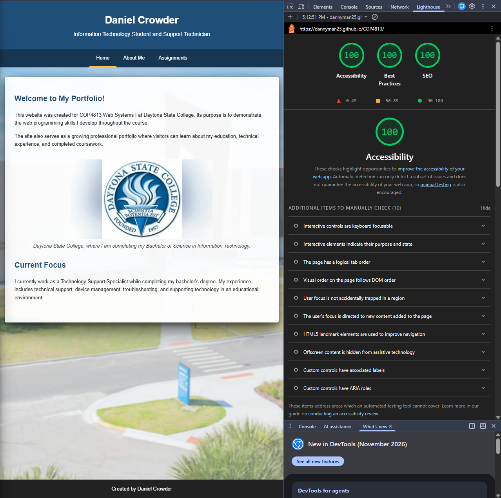

Assignment 10: Mobile Website and Lighthouse Audit
I designed my home page to work on both desktop and mobile devices. The page keeps the same navigation choices and content while adjusting its layout to fit smaller screens.
Lighthouse Mobile Audit Results

Analysis
The Lighthouse audit gave the website a score of 97 for Performance and scores of 100 for Accessibility, Best Practices, and SEO. The report stated that Chrome extensions may have affected the Performance result.
The mobile version keeps the same Home, About Me, and Assignments navigation choices as the desktop version. The page content and images resize to fit smaller screens, and the navigation links can be activated by either a mouse click or a touch.